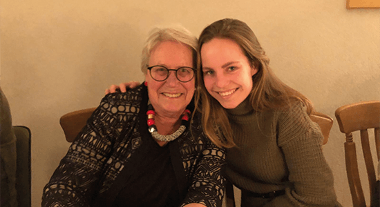
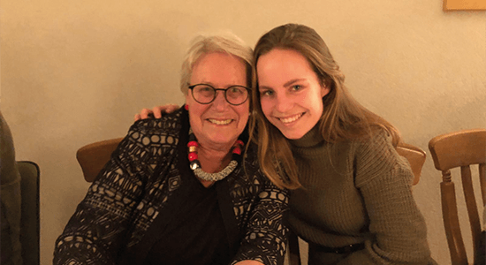

Over mij
 Ik als IxD'er
Ik als IxD'er
Vroeger wist ik nooit wat ik wilde worden. Ik wist alleen dat ik het leuk vond om creatief bezig te zijn, het bedenken van oplossingen leuk vond en graag iets wilde doen wat de toekomst gaat bepalen. Nu, bijna zeven jaar later, volg ik een opleiding om een echte interaction designer te worden. Hier kan ik echt volledig mijn ei in kwijt. Soms ben ik uren bezig met het bedenken en uitwerken van een concept zonder dat ik het door heb. Ik onderscheid mezelf als persoon ten opzichte van andere Interaction designers doordat ik altijd opzoek ben naar feedback. Ik heb vind het tof als iemand eerlijk laat weten wat hij vind van mijn werk, daar leer ik van. Ik sta dan ook in mijn omgeving bekend als iemand die hard werkt om iets te behalen. Dit komt doordat ik gestructureerd te werk ga en nooit afgerond werk laat liggen. Daarom zet ik mij altijd 100% in voor de taken die ik krijg. Het optimisme in mij zorgt ervoor dat ik ook tijdens zware tijden doorzet. Met deze positieve houding probeer ik ook mijn team te motiveren. Ik noem mezelf het liefst een interaction designer. Dit is een verzamelnaam meerdere rollen die een ontwerper kan aannemen en die wij dus bij CMD hebben geleerd. Zoals UI designer, UX designeren usability tester.
 


Mijn doel
De allerleukste projecten die ik heb uitgevoerd, hebben allemaal één ding gemeen: het helpen van de doelgroep. Gebruiksvriendelijkheid is in mijn ogen het aller belangrijkste wat er is. Zo vind ik het onwijs interessant om concepten te bedenken voor speciale doelgroepen. Denk aan doven, blinden en mensen met een verstandelijke of fysieke beperking. De doorsnee mens vind zijn weg wel, met of zonder apps. Maar voor deze doelgroep zijn de meeste apps niet geschikt. Het is mijn doel om later wat voor heb te gaan betekenen. Een kleine stap in de goede richting was het volgen van een stage bij internetbureau IDN. Ze steunen belangen organisaties met een website tegen een lager prijsje. Zo heb ik tijdens het ontwerpen van website regelmatig rekening gehouden met de speciale doelgroep die de stichting steunt. Ook heb ik de minor usability expert volbracht. Deze minor zorgde voor meer verdieping van mijn huidige kennis over gebruiksvriendelijkheid. Zie hier het werk wat ik voor een aantal opdrachtgevers heb verricht tijdens dit vak.
Leuke feitjes
Ik ben werkelijk dol op koken, ik smeer mijn vrienden regelmatig nieuwe vegetarische recepten aan. Ook het opzoeken van restaurantjes met de beste vegetarische menukaart is een talent.
Ik vind heerlijk om een balletje te slaan op het hockeyveld met mijn lieve vriendenteam.
Ik kan helemaal opgaan in muziek. Ik ben vooral fan van nummers uit de 80's, ja ja ik ben een echte Queen fanaat. De LP platen van mijn ouders worden grijs gedraaid.
Ik kan me uren vermaken in de natuur, vooral wandelen in de bergen doe ik graag. Ik vind kamperen de leukste manier die er is om op vakantie te gaan.
Ik ben altijd in voor een spelletjes avond! Ik ga graag langs opa’s en oma’s voor een potje ouderwets rummikub.
Ik houd van dierenfilmpjes kijken vanachter mijn mobiel, maar als ik in het echt een hond tegen kom weet ik niet hoe hard ik moet wegrennen.